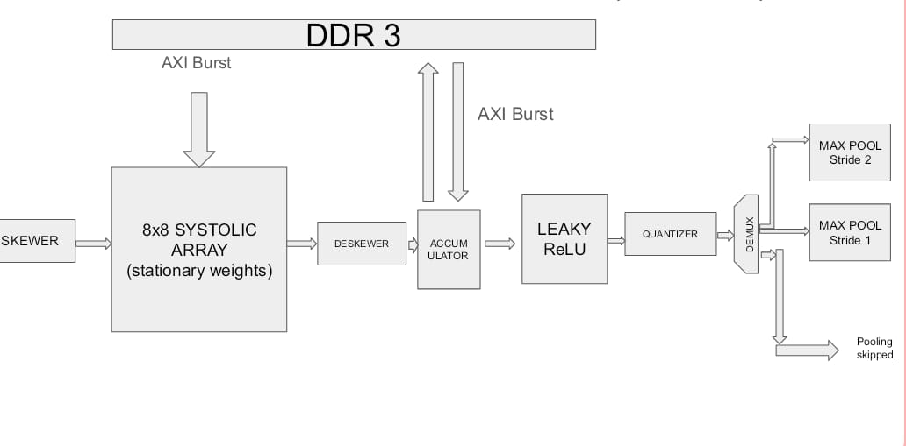
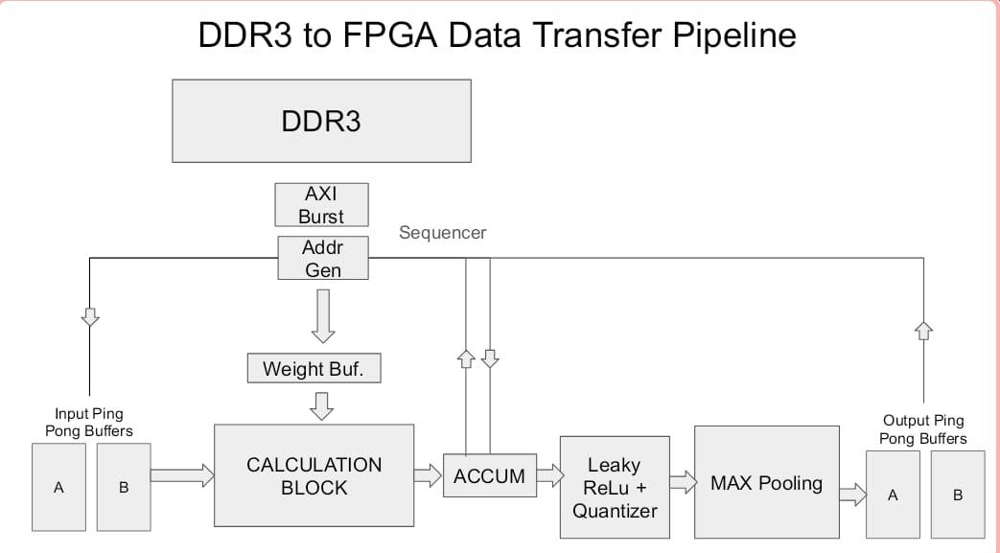
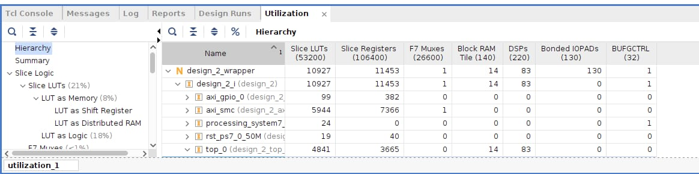

Where's Waldo: A custom FPGA hardware accelerator engineered to run the YOLO object detection model. The architecture parallelizes matrix multiplications and convolution operations directly in hardware to process live camera feeds. This pipeline allows the system to output bounding boxes and class labels in real time as objects move through the camera's field of view.
Gallery


fpga calculation pipeline

Hardware utilisation
Gradient on FPGA using convolutions